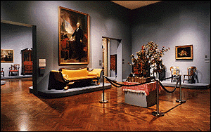

The Minneapolis Institute of Arts
Main Menu ~ Permanent Collection List ~ Interactive Museum Maps ~ Back ~ Next
Decorative Arts
 (c) 48k
The decorative arts collection includes American and European furniture, ceramics, and glass from the 16th through the 20th centuries. The Institute also has one of the best silver collections in the country, including a tea service made by Paul Revere. Decorative arts are included in many permanent galleries.